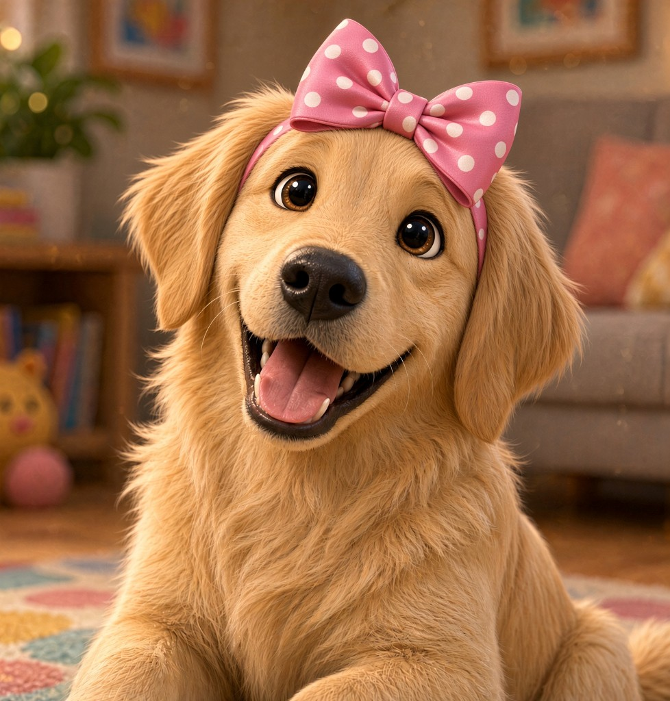

Today’s panel
S
Woof! I’m Lucy. Tap play and we’ll learn /s/.
SATPIN

ABC Trail · follow the gutter
Which picture starts with /s/?
★ ★ ★
S is for Star
Three of three. The pouch opens.

Grown-Ups
1234
Today’s letterS · SATPIN
Round size3 letters
Offline copyOff
Roster24 faces